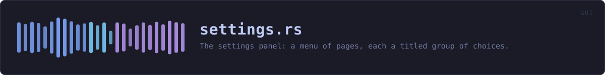

crates/veilvoice-gui/src/settings.rs
veilvoice-gui · 733 lines · read the source
The settings panel: a menu of pages, each a titled group of choices.
Why a menu rather than one long list
There are three kinds of setting here and they answer different questions: what the app looks like, how it moves, and what it does with the files it writes. Stacked in one column they read as an undifferentiated wall of tick boxes, and the one that matters most -- at-rest encryption -- ends up looking exactly as important as the colour scheme. A menu with a page per group keeps each question next to its own explanation.
Every change applies immediately, and is saved immediately
There is no "apply" button and no "unsaved changes" state. Both are ways to lose a choice silently. If saving fails the choice still applies for this session and the panel says, in the panel, that it could not be remembered and why -- rather than failing quietly and letting the setting reappear wrong on the next launch.
What is deliberately not in here
The app lock and the at-rest passphrase have their own tab and stay there. A password field sitting between "animations" and "colour scheme" invites being treated with the same weight, and it is not the same weight.
WHAT THIS FILE CONTAINS
733 lines defining 16 functions (8 public), 2 types and 1 constant. Everything below is read out of the source, so it cannot disagree with the code.
The types it owns.
enum Pageline 35 — Which page of the settings menu is showing.struct Settingsline 54 — The settings tab's own state.
What happens when it runs. These are the ways in: public, and nothing else in this file calls them, so they are what an outside caller reaches first.
Settings::loadline 98 — Load preferences from this platform's config directory and apply the chosen theme to ctx.Settings::needs_first_runline 129 — Whether the first-run choice has still to be made.Settings::save_errorline 154 — Whether the app should open in group mode, and a way to change it.Settings::always_groupline 159 — Whether the app should open in group mode.Settings::set_always_groupline 164 — Record whether the app should open in group mode.
reachespersistSettings::first_run_panelline 177 — The first-run panel: offered once, with animation already on.
reachespersistSettings::tabline 237 — The settings tab.
reachesappearance_page,motion_page,storage_page,custom_palette_help,persist,section,swatches,motion
WHAT CALLS WHAT
The functions this file defines, and the calls between them. An edge means the callee's name appears, called, inside the caller's body — a syntactic reading, not a type-resolved one.
The same graph as Mermaid source
%%{init: {"theme":"base","themeVariables":{"background":"#1a1b26","primaryColor":"#1f2335","primaryTextColor":"#c0caf5","primaryBorderColor":"#7aa2f7","secondaryColor":"#16161e","tertiaryColor":"#16161e","lineColor":"#737aa2","textColor":"#c0caf5","mainBkg":"#1f2335","nodeBorder":"#7aa2f7","clusterBkg":"#16161e","clusterBorder":"#2f3549","fontFamily":"ui-monospace, SFMono-Regular, Consolas, monospace","fontSize":"14px"}}}%%
flowchart TD
n_default["Settings::default<br/>line 79"]
n_load(["Settings::load<br/>line 98"])
n_motion["Settings::motion<br/>line 124"]
n_needs_first_run(["Settings::needs_first_run<br/>line 129"])
n_persist["Settings::persist<br/>line 133"]
n_save_error(["Settings::save_error<br/>line 154"])
n_always_group(["Settings::always_group<br/>line 159"])
n_set_always_group(["Settings::set_always_group<br/>line 164"])
n_first_run_panel(["Settings::first_run_panel<br/>line 177"])
n_tab(["Settings::tab<br/>line 237"])
n_custom_palette_help["Settings::custom_palette_help<br/>line 290"]
n_appearance_page["Settings::appearance_page<br/>line 353"]
n_motion_page["Settings::motion_page<br/>line 390"]
n_storage_page["Settings::storage_page<br/>line 465"]
n_section["section<br/>line 526"]
n_swatches["swatches<br/>line 534"]
n_appearance_page --> n_custom_palette_help
n_appearance_page --> n_persist
n_appearance_page --> n_section
n_appearance_page --> n_swatches
n_first_run_panel --> n_persist
n_motion_page --> n_motion
n_motion_page --> n_persist
n_motion_page --> n_section
n_set_always_group --> n_persist
n_storage_page --> n_persist
n_storage_page --> n_section
n_tab --> n_appearance_page
n_tab --> n_motion_page
n_tab --> n_storage_page
click n_default href "https://github.com/tilas01/veilvoice/blob/main/crates/veilvoice-gui/src/settings.rs#L79" "open the source"
click n_load href "https://github.com/tilas01/veilvoice/blob/main/crates/veilvoice-gui/src/settings.rs#L98" "open the source"
click n_motion href "https://github.com/tilas01/veilvoice/blob/main/crates/veilvoice-gui/src/settings.rs#L124" "open the source"
click n_needs_first_run href "https://github.com/tilas01/veilvoice/blob/main/crates/veilvoice-gui/src/settings.rs#L129" "open the source"
click n_persist href "https://github.com/tilas01/veilvoice/blob/main/crates/veilvoice-gui/src/settings.rs#L133" "open the source"
click n_save_error href "https://github.com/tilas01/veilvoice/blob/main/crates/veilvoice-gui/src/settings.rs#L154" "open the source"
click n_always_group href "https://github.com/tilas01/veilvoice/blob/main/crates/veilvoice-gui/src/settings.rs#L159" "open the source"
click n_set_always_group href "https://github.com/tilas01/veilvoice/blob/main/crates/veilvoice-gui/src/settings.rs#L164" "open the source"
click n_first_run_panel href "https://github.com/tilas01/veilvoice/blob/main/crates/veilvoice-gui/src/settings.rs#L177" "open the source"
click n_tab href "https://github.com/tilas01/veilvoice/blob/main/crates/veilvoice-gui/src/settings.rs#L237" "open the source"
click n_custom_palette_help href "https://github.com/tilas01/veilvoice/blob/main/crates/veilvoice-gui/src/settings.rs#L290" "open the source"
click n_appearance_page href "https://github.com/tilas01/veilvoice/blob/main/crates/veilvoice-gui/src/settings.rs#L353" "open the source"
click n_motion_page href "https://github.com/tilas01/veilvoice/blob/main/crates/veilvoice-gui/src/settings.rs#L390" "open the source"
click n_storage_page href "https://github.com/tilas01/veilvoice/blob/main/crates/veilvoice-gui/src/settings.rs#L465" "open the source"
click n_section href "https://github.com/tilas01/veilvoice/blob/main/crates/veilvoice-gui/src/settings.rs#L526" "open the source"
click n_swatches href "https://github.com/tilas01/veilvoice/blob/main/crates/veilvoice-gui/src/settings.rs#L534" "open the source"
classDef entry fill:#1f2335,stroke:#7aa2f7,color:#c0caf5
class n_load,n_needs_first_run,n_save_error,n_always_group,n_set_always_group,n_first_run_panel,n_tab entry
classDef api fill:#1f2335,stroke:#7dcfff,color:#c0caf5
class n_motion api
classDef helper fill:#1f2335,stroke:#bb9af7,color:#c0caf5
class n_default,n_persist,n_custom_palette_help,n_appearance_page,n_motion_page,n_storage_page,n_section,n_swatches helperThis site loads no third-party script, so it cannot run Mermaid; the diagram above is the same nodes and edges drawn by the generator instead. GitHub renders the source below directly.
ITEMS
| Item | Line | Documentation |
|---|---|---|
Page pub enum | 35 | Which page of the settings menu is showing. |
Page::ALL pub const | 46 | Every page, in menu order, with its label and one-line summary. |
Settings pub struct | 54 | The settings tab's own state. |
Settings::default fn | 79 | |
Settings::load pub fn | 98 | Load preferences from this platform's config directory and apply the chosen theme to ctx. |
Settings::motion pub fn | 124 | How much movement is allowed this frame. |
Settings::needs_first_run pub fn | 129 | Whether the first-run choice has still to be made. |
Settings::persist fn | 133 | |
Settings::save_error pub fn | 154 | Whether the app should open in group mode, and a way to change it. |
Settings::always_group pub fn | 159 | Whether the app should open in group mode. |
Settings::set_always_group pub fn | 164 | Record whether the app should open in group mode. |
Settings::first_run_panel pub fn | 177 | The first-run panel: offered once, with animation already on. |
Settings::tab pub fn | 237 | The settings tab. |
Settings::custom_palette_help fn | 290 | Explain where custom palettes go, and say what was refused and why. |
Settings::appearance_page fn | 353 | |
Settings::motion_page fn | 390 | |
Settings::storage_page fn | 465 | |
section fn | 526 | A titled group with a one-line explanation under it. |
swatches fn | 534 | The active palette, as a row of swatches, so the choice can be seen rather than only read. |